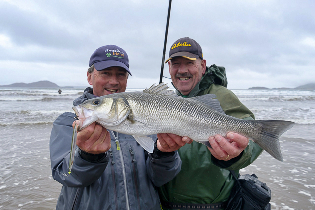
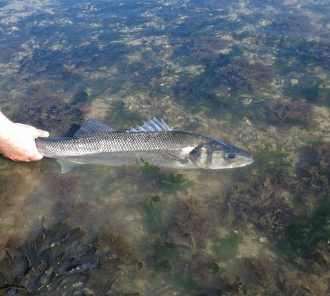
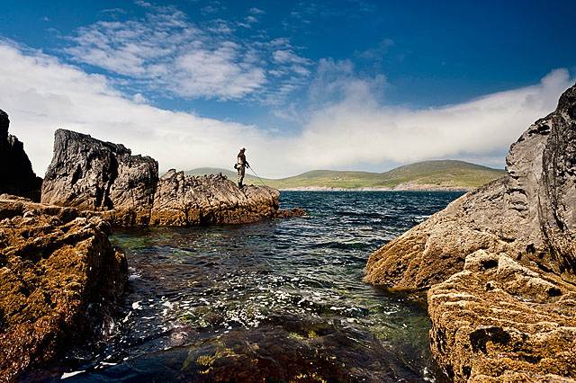
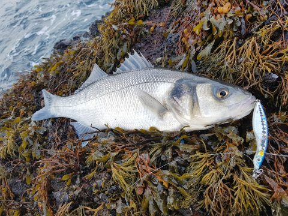
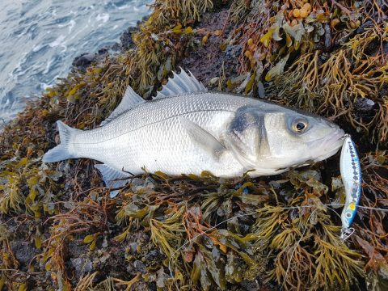
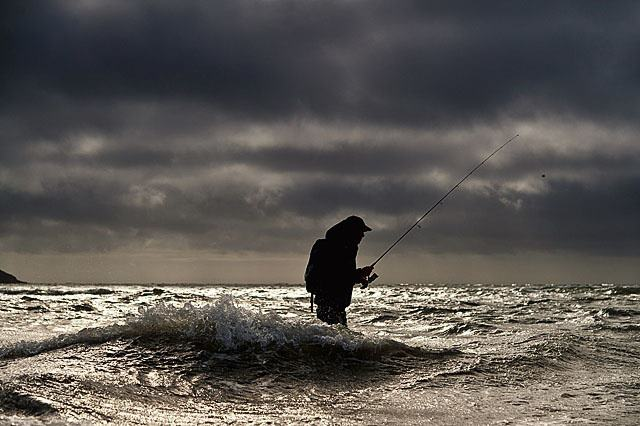

Where To Catch Them

Explore
An important aspect of bass angling is exploring the coast for good places to fish for bass. Science now confirms what bass anglers have long known: bass have their favourite patches along the coast where they can be reliably caught.
Of course, few bass anglers will reveal the best marks when they find them! But the following introduction to bass behaviour and general advice will hopefully help you get out there and start finding good bass marks in your area.

Hunting A Hunter: Bass Foraging
Adult bass are voracious and opportunistic predators, feeding on a wide variety of smaller fish. Bass also like to feed on many invertebrates that live in the intertidal zone, including crustaceans, such as crabs and shrimps, and polychaete worms, such as ragworm. Peeler crabs are an especially favourite food.
When feeding inshore, bass like to follow just behind the rising tide, often travelling quite far into estuaries. Bass cruise through the shallows, snapping up any prey unfortunate enough to cross their path as they emerge from their low-tide refuges. They usually forage towards the bottom or mid-water, but they will rise to the surface in pursuit of schooling fish, such as sandeels or sprat.
Bass hunt quite close to the shore in shallow water, usually within around 20–30 metres. They love conditions that churn up the water, throwing potential prey into the water column and hiding their own presence.

Places To Fish For Bass
The key things to look for are areas of rocky, weedy cover that shelters potential bass prey, as well as areas of turbulent water that churns up food and hides bass on the prowl. Investigate potential bass marks at low tide to map out areas to fish as the tide comes in.
It is important to remember that you do not need to cast out very far; bass come right in to shallow water and happily swim just behind the breakers on beaches.
- Areas with tidal races and big tide flows, such as estuary mouths and around rocky headlands.
- Sandy surf beaches, especially after storms, when the water has become churned and turbid.
- Intertidal mud and sand flats with a lot of cover, such as shallow, weedy reefs or lots of large rocks with weed.
- Inlets and gullies around small cliffs and headlands that may trap food and provide cover for bass.
- Rough ground and big rock pools that are covered as the tide advances.



Time & Tide
The most popular time of the year to fish for bass in Ireland is from the middle of June to the end of October, when bass are inshore and feeding along the coast.
Like many fish species, bass tend to be more active at nighttime. Dawn and dusk are considered good times to fish for them.
Bass activity usually increases in the run up to new moons and full moons as spring tides grow in strength.
Weather is important when angling for bass. A good time to fish for bass is when the sea has settled but is still coloured just after a period of windy or stormy weather.

Map Of Bass Angling Areas
Ireland is at the northern limit of the range of bass, which are native to the western and northern coasts of Europe and the northern coast of Africa.
In Irish waters, they are most usually found on eastern and southern coasts, from the Boyne Estuary around to Galway Bay. They are most plentiful along the coast of Wexford, Waterford and Cork.
Important Notice!
This website was developed as a student assignment in web design. Any errors or omissions are solely those of the author, Rory Feeney.
This website does not represent the views of Inland Fisheries Ireland, any other organisation or any other individual. I gratefully acknowledge my colleagues in Inland Fisheries Ireland and Henry Gilbey for providing information and access to images.